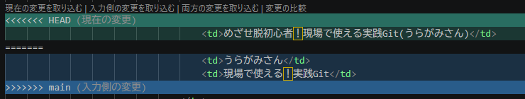
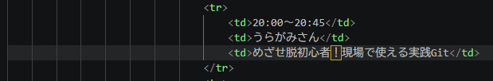
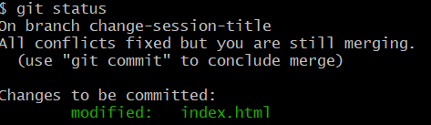

gitとgithubについて、最初の初期設定から始まり、ローカルリポジトリでの基本操作、リモートリポジトリを交えたブランチ運用やコンフリクトの解消など 一連の流れを粗くまとめた。途中で登場する理解したいコマンドについては、ページ下部にて詳細な解説を用意。
最初に一度だけ設定。Gitの設定に関しては git config というコマンドを利用する。
—global オプションを付けることで、ホームディレクトリの .gitconfig というファイルに設定が保存されていく。
設定した後に、逐一 git config 設定項目名 を実行して確認するとよい。
git config --list
git config --global user.name "Your Name"
git config --global user.email "your_email@example.com"
git config --global core.editor "code --wait"
codeはVS Codeを起動するコマンド。VS Codeインストール時にcodeという名前でpathに登録されているはず。-waitオプションは、VS Codeでファイルを開いた後、そのファイルを閉じるまでGitの処理を待機させるために必要。これがないと、エディタが起動した瞬間にGitが「編集が終わった」と勘違いしてしまい、コミットメッセージなどが空になってしまう。git config --list
git config --global init.defaultBranch main
設定項目を削除したいときは以下を実行。
git config --global --unset 設定項目名手元のパソコンとGithubとで通信してデータをやりとりするには、認証という手続きが必要になる。Githubで使用できる認証方法は２つあり（2025年時点）、「HTTPというプロトコルとパーソナルアクセストークンを用いたユーザー認証」または「SSHというプロトコルと公開鍵を用いたサーバー認証」である。いづれの方法も最初にコマンドラインやブラウザー上での設定が必要。SSHを使う場合は、最初の設定以降はコマンドライン上で認証のために、ユーザー名やパーソナルアクセストークンなどを入力する必要がないので、Githubに接続する際の手順が軽減できる。
公開鍵による認証
ローカルでペアの秘密鍵と公開鍵を作成し、公開鍵をGithunに登録する。鍵を用いて暗号化通信を行う。
まず鍵を作成する。作業場はCUIで、ディレクトリはホームディレクトリ(~)。
ssh-keygen -t ed25519 -C "sample@example.com"生成した公開鍵をGitHubの設定画面に登録する。次のコマンドを実行してクリップボードにコピーする。
clip < /c/Users/ユーザー名/.ssh/id_ed25519.pub
pbcopy < /c/Users/ユーザー名/.ssh/id_ed25519.pub正しく設定できたのかを確認する
ssh -T git@github.comこの先ターミナル操作中にパスフレーズを聞かれたら、この値を入力すればよい。
GitHubのパスワードと混乱しがちだが、ターミナルでGitHubのパスワードを入力する機会はない。
ローカルリポジトリでは３つの場所を使い分けてファイルの状態を管理する。
mkdir ディレクトリ名touch ファイル名ローカルリポジトリを作りたいディレクトに移動して作る。ls -a で.gitディレクトリがあることを確認。
cd ディレクトリ名git initls -a逐一 git status で状態を確認。
git add ファイル名
git add . ← カレントディレクトリは以下のすべてのファイルを追加git add ディレクトリ名 ← ディレクトリは以下のすべてのファイルを追加git add ディレクトリ名/ファイル名 ← 指定したファイルを追加git status文末の改行でさえ差分となる。
ワークツリーとステージングエリアの差分
git diffステージングエリアとGitディレクトリ（前回のコミット）の差分
git diff --cachedコミットメッセージを複数行書く場合
git commit
コミットメッセージが一行の時
git commit -m "メッセージ内容"ステージングエリアへの追加とコミットを一度に行う。追加対象となるのはGitの管理下に置かれているファイルの変更。-aと-mの合体。
git commit -am "メッセージ内容"ワークツリーでの変更を取り消したいとき、git restoreコマンドを使えば、直前のコミットの状態に戻すことができる。
git restore ファイル名git restoreコマンドの —stagedオプションを使うと、ステージングエリアへの間違った登録を取り消せる。
git restore --staged ファイル名Gitの管理下にあるファイルは、エクスプローラーなどで削除しただけでは不十分である。「削除」をステージングエリアに登録し、コミットする必要がある。
（エクスプローラーなどで）ファイル削除 → 削除したファイルをステージング → 削除のコメントつけてコミット
が流れだが、最初の「削除＋ステージング」は git rmコマンドで同時にやってくれる。
git rm ファイル名
git rm -r ディレクトリパスlsgit statusgit commit -m "メッセージ内容"ログファイルやバックアップファイル、パスワードが書かれたファイルはGitで管理すべきではない。リモートリポジトリを共有しているメンバーに公開されるということを念頭に置く。
git add .gitignoregit commit -m ".gitignoreファイルを追加する"git logコマンドを実行すると、新しい順で「コミットハッシュ」「誰がコミットをしたか」「コミット日時」「コミットメッセージ」が表示される。-pオプションを付けるとファイルの差分も確認できる。
git loggit log -pリモートリポジトリ間でのやり取り。他人のアカウントのリポジトリを自分の(GitHub)アカウントに複製することをフォークという。自分のアカウントに持ってこれば、オリジナルに影響を与えることなくファイルの編集ができる。一般的には共同開発をしたいリポジトリをフォークして、こちら側で変更を加えた後、最終的にフォーク元のオリジナルへその変更を反映させるという使い方をする。
リモートリポジトリをローカルリポジトリとしてコピーする操作をクローンという。最初にリモートリポジトリを特定するためのURLをGitHub上で取得する。実行したディレクトリにクローンしたディレクトリが作られる。
git clone 貼り付けたURL
※復習：ローカルリポジトリを作るには git init をしていた。git clone コマンドはもう一つの作成方法なのだ。
リモートリポジトリの設定を確認してみる。
git remote -v
ブランチはGitで記録する履歴を枝分かれさせるための機能。作業内容ごとに別々に管理できる。
git branch ブランチ名git branch ← ブランチの確認git switch ブランチ名作成とスイッチはgit switchの-cオプションで同時に行うことができる。
git switch -c ブランチ名
git checkout -b ブランチ名 でも同じことができる今使っているブランチとほかのブランチを比較できる。
git diff ブランチ名
git diff mainまずmainブランチに移動して、マージを行う。
git switch maingit merge ブランチ名作成したブランチの取り込み（マージ）を依頼するのがプルリクエスト。流れとしては、まずローカルのブランチの状態をリモートに「プッシュ」することで、リモートリポジトリにも同じブランチが作成される（コピーした）。このリモートのブランチを、リモートのmainブランチに反映させたいのだが、反映させていいのかどうか議論したい（レビューしてもらいたい）。その議論のリクエストがプルリクエストなのである。プルリクエストの作成はGitHub上で行う。リクエストするブランチを選択するわけだ。
git push origin ブランチ名ローカルリポジトリのブランチだけでなく、リモートリポジトリのブランチも削除できる。
ローカルリポジトリのマージ済みのブランチの削除
git branch --delete ブランチ名
git branch -d ブランチ名 でもOKローカルリポジトリのマージ状況に関わらずブランチを削除
git branch -D ブランチ名リモートリポジトリのブランチの削除
git push --delete origin ブランチ名
git push origin :ブランチ名 でもOKリモートリポジトリの最新状態をローカルリポジトリに反映させる際は、まずローカルリポジトリをmainブランチに切り替えてからpullする。
git switch maingit pull origin mainまず反映させたいトピックブランチに移動してからマージする
git switch ブランチ名git merge mainまずgit statusで確認
git statusVSCodeでは以下のようになっている。

<<<から>>>までの行がコンフリクトしている箇所、===の行がマージ先とマージ元の変更箇所の境目。２つを融合したものに変更する。>>>とかも消す。
ファイルの編集
編集が完了したらステージングエリアに追加する。git statusでファイルの編集を確認。
git add -Agit status
All conflicts fixed とある。コンフリクトにより失敗したマージは、解消してコミットを行うまでマージしている最中（マージが未完）であるとみなされる。パラメーターなしでコミットすれば完了。コミットメッセージが入力された状態でエディターが立ち上がるが、何も編集せずに閉じればよい。
git commit解消したらプッシュする
git push origin ブランチ名プルリクエストでコンフリクトメッセージが出ていた場合は、これにてマージができるようになっている。
git initgit add ファイル名 して git commit -m “メッセージ” するgit commit -am "メッセージ" や git branch ブランチ名 や git merge ブランチ名 などでGitで管理git remote add origin コピーしたURLgit remote -v を実行してリモートリポジトリのパスが出れば接続成功git push origin main でプッシュすれば完了ssh-keygen -t ed25519 -C "sample@example.com"の解説
このコマンドは、GitHubなどのサーバーに安全に接続するための「SSH鍵（秘密鍵と公開鍵のペア）」を作成するためのもの。
現在、セキュリティとパフォーマンスの両面で最も推奨されている設定のひとつ。
ssh-keygen
t ed25519
C "example@gmail.com"
成功すると、指定した場所に2つのファイルがセットで作成される。
id_ed25519 （秘密鍵: 自分だけの印鑑。絶対に見せてはいけない）id_ed25519.pub （公開鍵: 相手に渡す鍵。GitHubの設定画面などに中身を貼り付ける）この鍵を作成したあとは、GitHubなどの設定画面に「公開鍵（.pubの方）」を登録することで、パスワード入力を省略して安全に通信ができるようになる。
ssh -T git@github.comの解説
このコマンドは、設定したSSH鍵を使ってGitHubとの接続が正しく行えるかを確認する「テストコマンド」。
新しくSSH鍵を作成してGitHubに登録したあと、実際にGit操作（pushやpull）をする前に、ちゃんと通信できるかをチェックするために使う。
ssh
T
git@github.com
git になる。